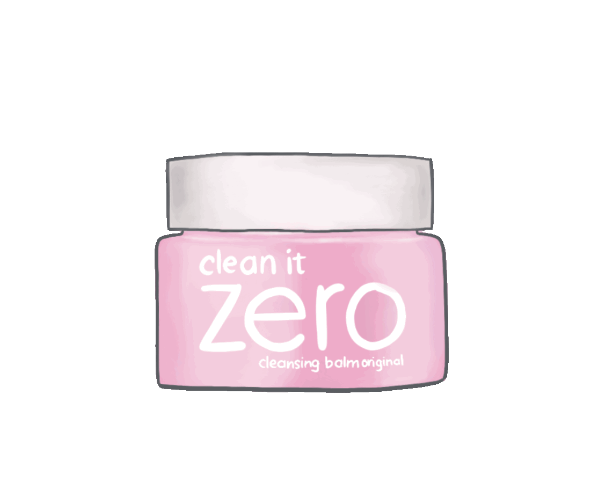
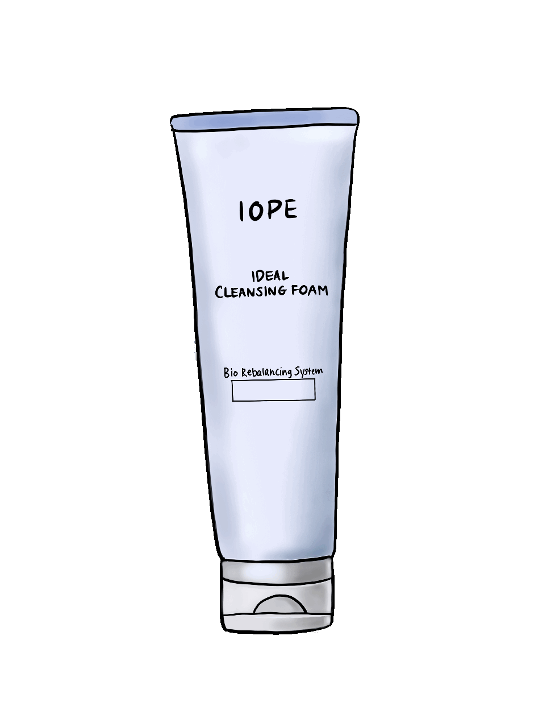
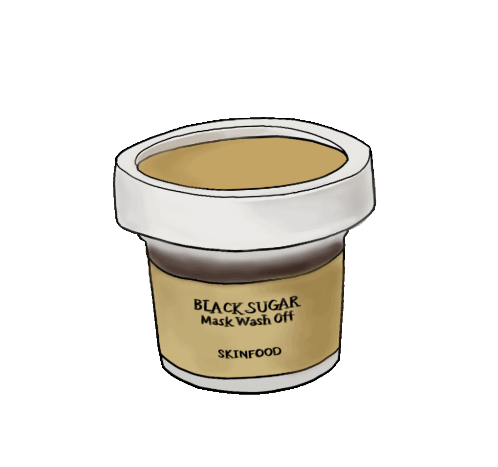
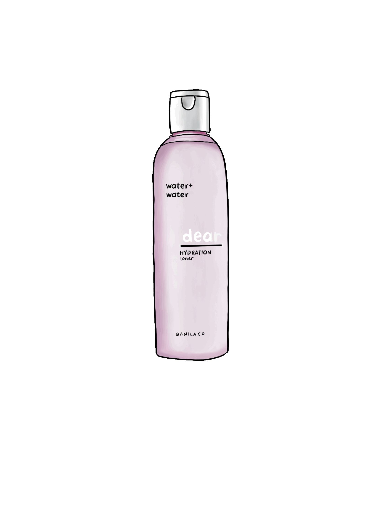
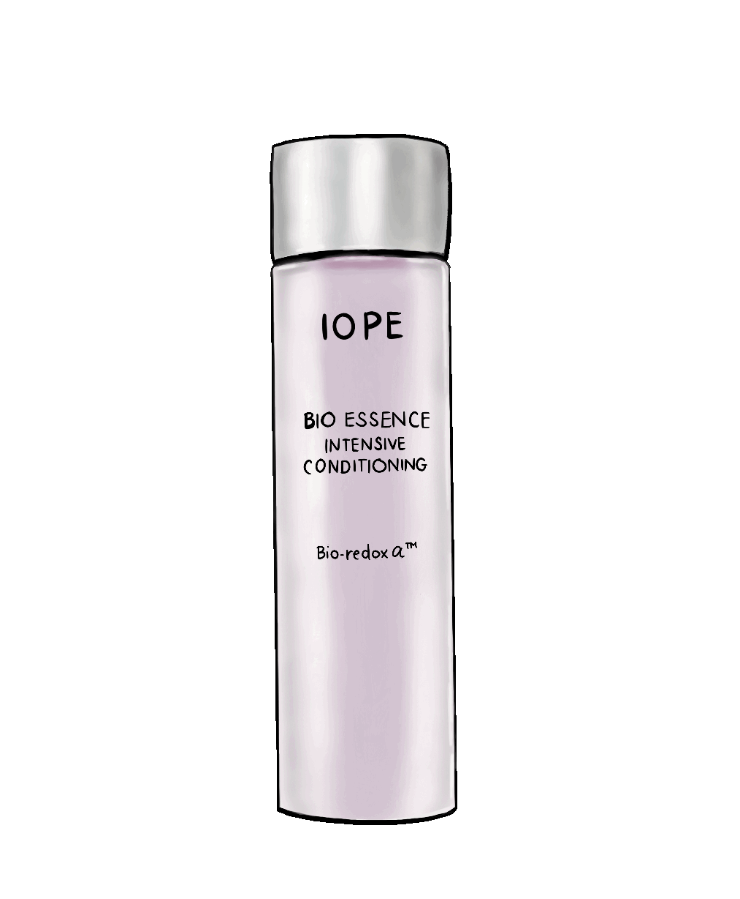
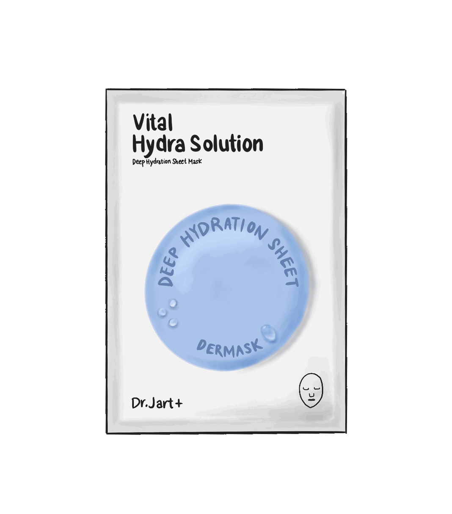
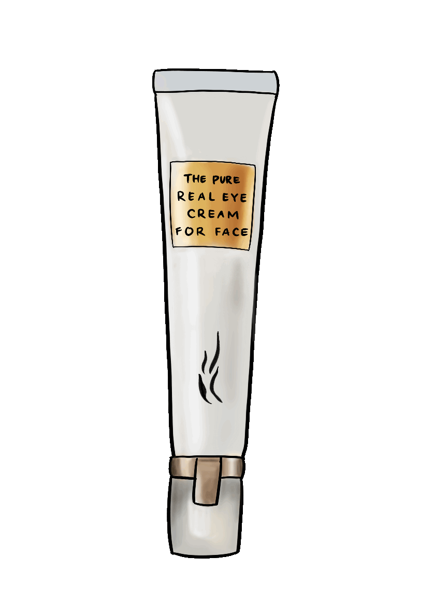
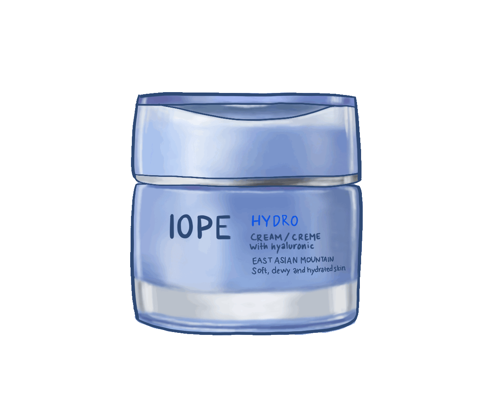

Step 1
Use an oil based cleanser to remove oil based makeup.
Lather in hands then massage face for 30 seconds.
Rinse with warm water

Step 2
Double cleanse using a foam cleanser.
Rinse with warm water then gently pat-dry face with towel.

Step 3
Use gentle exfoliator to remove dead skin cells and unclogg pores.

Step 4
Use a toner to rebalance out pH levels of the face and remove left over makeup residue. Toner repairs the skin's barrier to effectively absorb the ingredients that follow.
Take a cotton pad and use upward motion.

Step 5
Then take an essense to hydrate the skin. For more treatment, use serum or ampoules to target problem areas such as acne, fine lines, and hyperpigmentation.
Bonus step for dehydrated skin. Gently tap into skin affected by skin concern.

Step 6
Use sheet mask to further absorb nutrients and moisture. Masks infuses skin with concentrated essense. An essential step in skincare.

Step 7
Use eyecream to hydrate and minimize dark cirlces and puffiness. Gently tap using pinkie or ring finger under the eye.

Step 8
Use a moisturizer or cream to lock in all the hydration and ingredients from previous products.
